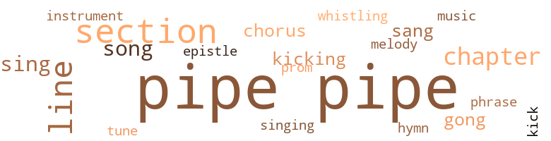
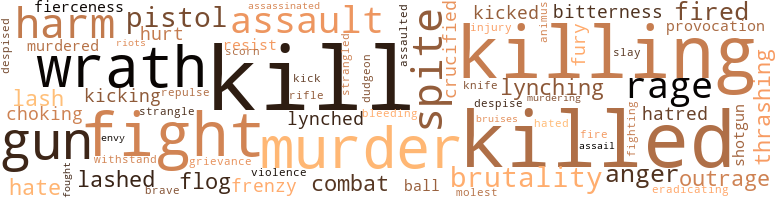
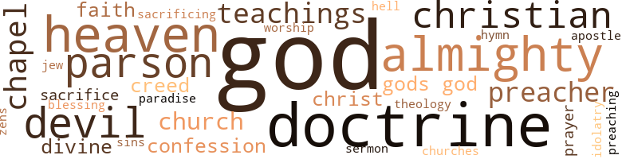

As We See It, by Waring, Robert L. (1910)
124 music-related terms matched in this text.
Most frequent terms in this topic: pipe (78); section (9); lines (7); chapter (4); song (3)
chapter.n.01
Definition: a subdivision of a written work; usually numbered and titled
| word | sentence |
|---|---|
| chapter | WHILE Abe was at the home of Miss Donewell , Mal - colm missed his pipe , the meerschaum pipe spoken of in a previous chapter . |
| chapter | TO DISCUSS the mysterious deaths noted in the previous chapter , and to devise ways and means by which these mysteries could be solved , Nick Lashum and his cronies met at their favorite nook , by the pig sty . |
| chapter | It appears that the Negro referred to in a previous chapter as belonging to Nick Lashum - he having been given to Lashum by Mr. Jim Connors , and sold by Nick as a worthless ' nigger ' - had , after the war , accumulated some property and had a good home , upon which he reared a family of nine children , the eldest of whom was a man of family and taught the County School for colored children . |
| chapter | Early Christmas morning , Abe , mounted on Ben , the Overley horse mentioned in a previous chapter , was riding through the back woods , when suddenly he came upon a horseman , who , upon seeing him , wheeled his horse and fled into the woods . |
chorus.n.01
Definition: any utterance produced simultaneously by a group
| word | sentence |
|---|---|
| chorus | " Why ? " came the question in a chorus of voices . |
| chorus | " God forbid ! " said the three men in chorus . |
epistle.n.02
Definition: a book of the New Testament written in the form of a letter from an Apostle
| word | sentence |
|---|---|
| epistle | Abe sat silent for some moments after the reading of this epistle , then said : " Again have those young men done me a very great service ; this time unconsciously . |
gong.n.01
Definition: a percussion instrument consisting of a metal plate that is struck with a softheaded drumstick
| word | sentence |
|---|---|
| gong | They had been seated but a short time when a gong sounded and the inmates of the library arose and began to file out of the room . |
| gong | He also remarked that the gong had sounded for bedtime . |
hymn.n.01
Definition: a song of praise (to God or to a saint or to a nation)
| word | sentence |
|---|---|
| hymn | Old Abe in a voice rich and melodious , one of those voices around which sweet memories of plantation life still cling , broke forth in the good old hymn : " Blest be the tie that binds Our hearts in sacred love ; The fellowship of kindred minds Is like to that above . " |
kick.v.04
Definition: kick a leg up
| word | sentence |
|---|---|
| kicking | Sit there now looking like that d - old kicking mule of yours . |
| kick | If the hind leg is caught , he will plunge and kick , unseating the rider . |
| kicking | " Why , Abe , you have no more sense in that old black pate of yours than that d - old kicking mule . |
music.n.01
Definition: an artistic form of auditory communication incorporating instrumental or vocal tones in a structured and continuous manner
| word | sentence |
|---|---|
| music | Abe was very fond of music , and , as Miss Watson was to be there , the two inducements decided him to accept . |
musical_instrument.n.01
Definition: any of various devices or contrivances that can be used to produce musical tones or sounds
| word | sentence |
|---|---|
| instrument | Abe concluded that he would possess himself of the pieces of trace , splice them together , and make this recon - structed trace the instrument of his revenge . |
phrase.n.02
Definition: a short musical passage
| word | sentence |
|---|---|
| phrase | " Well , " answered the Sheriff , " that is a slang phrase that should carry an insult with it . |
pipe.n.04
Definition: a tubular wind instrument
| word | sentence |
|---|---|
| pipe | One a white man and owner of the place , the other an aged Negro , of the old school , were smoking in perfect harmony , the white man , a meerschaum pipe of queer work - manship and of great age , having been in his family for three generations , the Negro the old corncob pipe so common among Negroes of that day . |
| pipe | One a white man and owner of the place , the other an aged Negro , of the old school , were smoking in perfect harmony , the white man , a meerschaum pipe of queer work - manship and of great age , having been in his family for three generations , the Negro the old corncob pipe so common among Negroes of that day . |
| pipe | After Malcolm left , Abe sat musing for some moments , after which he walked into Malcolm 's room and took up a queer - looking meerschaum pipe , filled it and began to smoke . |
| pipe | Soon he remarked to himself that he wanted to see Forbes , and left his room , taking the pipe with him . |
| pipe | Not being permitted to smoke in the halls , he pushed the stem of the pipe up his sleeve , holding the bowl in his hand close to his body . |
| pipe | With the pipe in this position , apparently hiding it , Abe met Buck , Bloxum and several other boys of that set . |
| pipe | " What you recon ' he is hidin ' that pipe fer ? " said Buck , as Abe passed him . |
| pipe | We 've got nothing to do with thatair pipe . |
| pipe | WHILE Abe was at the home of Miss Donewell , Mal - colm missed his pipe , the meerschaum pipe spoken of in a previous chapter . |
| pipe | WHILE Abe was at the home of Miss Donewell , Mal - colm missed his pipe , the meerschaum pipe spoken of in a previous chapter . |
| pipe | After a moment or two Malcolm added : " We have met with a very serious loss , Abe , if you do not know where our pipe is . |
| pipe | He values that pipe very highly , because his great-grandfather smoked it . |
| pipe | That pipe was never off the old place before and now it is lost . " |
| pipe | He looked in every place in which the pipe could pos - sibly be , but to no purpose . |
| pipe | They then proceeded to Forbes 's room , but Forbes had not seen the pipe nor had any of the rest of the boys . |
| pipe | " This pipe is a family heirloom . |
| pipe | He first , hoAvever , reported to Dr. Finley that the pipe was lost under circumstances that looked as if it were stolen . |
| pipe | Dr. Finley had a short heart-to-heart talk with them , suggesting that he would consider it a personal favor if the boy who knew the whereabouts of the pipe would see that it was returned . |
| pipe | He also intimated that he thought the boys on the same fioor with Malcolm and Abe knew all about the pipe , thereby practically exonerating the rest of the school . |
| pipe | That we saw Abe with the pipe . |
| pipe | All the fellows who were with us in the hall will remember how he had the pipe up his coat sleeve . |
| pipe | The two then proceeded to the Dean 's office and stated to him that on account of being on the same floor with the Over - leys they were very much humiliated because of the suspicion cast upon them by the loss of Overley 's pipe . |
| pipe | They very much disliked to say anything that would reflect upon any student , but they saw Abe Overley with the pipe half up his coat sleeve going into Forbes 's room on the night of November 10th ; were confident that it was November 10th . |
| pipe | They gave the names of several other students who saw him , together with the part of the conversation that followed after Buck 's remark about Abe taking the pipe to Forbes . |
| pipe | Consider well before you decide not to make a complete statement of your whereabouts the night this pipe was missed . " |
| pipe | This white boy feels the loss of his pipe very keenly . |
| pipe | Upon Malcolm 's arrival the Doctor told him what he had heard , the number of witnesses who saw Abe with the pipe , and , finally , Abe 's refusal to say where he was the night the pipe was lost . |
| pipe | Upon Malcolm 's arrival the Doctor told him what he had heard , the number of witnesses who saw Abe with the pipe , and , finally , Abe 's refusal to say where he was the night the pipe was lost . |
| pipe | " I will never believe Abe stole that pipe , nor will he steal , " said Malcolm , as he left the Doctor 's office . |
| pipe | " You have refused to tell Doctor Finley where you were on the night the pipe was lost . |
| pipe | " Abe , do I understand you to say that I knew of your whereabouts upon the night this pipe was stolen ? |
| pipe | Still Abe had not told where he was the night the pipe was stolen . |
| pipe | " Well , the truth is , " said Malcolm , " while I will never believe that Abe stole that pipe , nor will he steal , he would not tell Dr. Finley where he was the night of the 10th , nor would he tell me . |
| pipe | " November 10th is the date upon which I lost that pipe . |
| pipe | He took Malcolm 's hand , however , in both of his own and said : " Malcolm , did you think I stole that pipe ? " |
| pipe | Now , through Miss Watson , he accepted an invitation to meet some ladies at Miss Donewell 's home , and while there this pipe was stolen . |
| pipe | Turning to Abe , he extended his hand very cordially , saying : " Overley , I hear that you are in trouble - that you are suspended - that you are practically accused of stealing a pipe from your friend Malcolm ; all these things coming through statements of persons not above small things . |
| pipe | The meerschaum pipe that I brought from home is the cause of all this trouble . |
| pipe | On the night of November 10th last , I missed the pipe from my room . |
| pipe | I reported the loss of the pipe to the Dean ; he , in turn , reported the loss to Dr. Finley , who called all the boys on our floor together , stating to them that he thought some of the boys on our floor knew where the pipe was . |
| pipe | I reported the loss of the pipe to the Dean ; he , in turn , reported the loss to Dr. Finley , who called all the boys on our floor together , stating to them that he thought some of the boys on our floor knew where the pipe was . |
| pipe | Later , Buck Lashum and Squealer Bloxum went to the Dean and told him that they , together with several other boys , saw Abe with the pipe , half up his sleeve , going through the hall to Will Forbes 's room . |
| pipe | I do not believe that Abe knows anything about the pipe ; but why does he not tell where he was ? |
| pipe | Abe suspended under suspicion of having stolen my pipe , that he has been playing with all ' his life ! |
| pipe | He saw Abe hiding that pipe ! |
| pipe | My po ' boy , he am in all dis heah trouble ' bout dat pipe . |
| pipe | I vouch Buck Lashum stole dat pipe . |
| pipe | WHEN it became known throughout the College that Abe Overley had been suspended , supposedly for the larceny of his friend 's meerschaum pipe , upon the statement of Buck Lashum and Bloxum , feeling ran very high . |
| pipe | The Oberlin College Bulletin contained the following edi - torial comment : " It is with regret we announce the suspension of Mr. Abra - ham Overley for the supposed larceny of a pipe belonging to his friend and classmate , Mr. Malcolm A. Overley , both of these young men residents of the State of Alabama . |
| pipe | " It appears that Mr. Malcolm Overley was the owner of a very old and valuable meerschaum pipe . |
| pipe | This pipe was stolen the night of November 10th . |
| pipe | " It appears further that Mr. Buck Lashum and Mr. Squealer Bloxum saw Mr. Abraham Overley , with the pipe in question half up his coat sleeve , passing through the hall to the room of Mr. William Forbes . |
| pipe | " It does not appear that Mr. Abraham Overley was given a chance to explain his having the pipe in his possession , if he had it , as claimed by the two gentlemen named . |
| pipe | Malcolm immediately started into a complete recital of the whole story , stating that it was November 9th that Abe had the pipe in the hall ; also stating Abe 's reason for not saying where he was the night of November 10th , to all of which the Doctor and faculty listened very attentively . |
| pipe | The Dean , together with two other members of the faculty , proceeded to make the search , which resulted in finding the pipe at the bottom of Lashum 's trunk . |
| pipe | The Dean took the pipe , wrapped very closely , to Dr. Finley 's office . |
| pipe | The Doctor had been informed as to how and where the Dean had found the pipe , so , after a short discussion , it was thought best to interview Bloxum first . |
| pipe | When Bloxum came into the room , the pipe was on the table in full view , and when he saw it he staggered to a chair and dropped upon it . |
| pipe | Dr. Finley did not question him at once , but kept looking at the pipe , waiting for Bloxum to be the first to say something concerning it . |
| pipe | Finally , the Doctor turned suddenly to the Dean and said : " Dean Sternly , where did you say you found this pipe ? " |
| pipe | " Mr. Bloxum , how came this pipe to be there ? " asked the Doctor . |
| pipe | Bloxum said that he and Lashum and a few others were passing through the hall the night before Buck got the pipe and they saw Abe with it . |
| pipe | Buck said : " Let 's get that pipe and put it on Abe , " but Bloxum advised him to let it alone . |
| pipe | All Bloxum did was to say that he saw Abe with the pipe , which was true . |
| pipe | When Buck saw the pipe on the table he became sullen at once . |
| pipe | " Mr. Lashum , do you know where that pipe was ? " asked the Doctor . |
| pipe | He told me to get the pipe and hide it and say that Abe stole it , and that we saw him with it , and that the boys would not know what night it was . |
| pipe | First , that the faculty , after new facts had come to light , had unanimously agreed to reinstate Mr. Abraham Overley , who had been suspended pending the finding of Mr. Malcolm Overley 's pipe and the investigation as to his where - abouts the night the pipe was stolen . |
| pipe | First , that the faculty , after new facts had come to light , had unanimously agreed to reinstate Mr. Abraham Overley , who had been suspended pending the finding of Mr. Malcolm Overley 's pipe and the investigation as to his where - abouts the night the pipe was stolen . |
| pipe | They just deliberately stole that pipe and accused somebody else of the theft , thereby bringing other people into it as witnesses , " answered De Vaux . |
| pipe | After writing home that Abe Overley had lied on him , that Abe had stolen a pipe and put it in his ( Buck 's ) trunk , Buck declared that he was coming home . |
| pipe | Buck , in his haste to get out of his father 's reach ran to the cabin of Black Sue , who was sitting before the door smoking a pipe - a habit common among the Negro women among her class . |
| pipe | He hurried to Sue 's cabin , where he found her dozing by the door , with her corncob pipe in her lap . |
| pipe | After Sue made this speech she lighted her pipe , closed her eyes and seemed to forget that Nick was in existence . |
| pipe | As soon as she obtained possession of the money she resumed her pipe , and her silence in the most aggravating manner . |
| pipe | " Wal , ef yo ' wants ter know , yo ' knows how ter find out , " answered Sue , and she resumed her pipe with the same exas - perating indifference . |
| pipe | Abe then told DeVaux the part his brother played in his troubles , of how his brother believed in him , when he was accused of stealing Malcolm 's pipe , of DeVaux 's sending men down to Alabama to investigate the killing of his mother and sister ; of the fact that he offered to go with him to his home to avenge the killings ; of how his letter put him on the track of Tim War deman , and ended by saying that there was nothing in the world he would not do for him and that he would never be able to return his kindness . |
| pipe | The first to arrive was Si Weedles , clad in his best , which consisted of a large hat , a large pair of boots , a large pair of pants , which were suspiciously like a pair that Sheriff Lashum used to pride himself upon owning , a hickory shirt and a large corn-cob pipe . |
promenade.n.01
Definition: a formal ball held for a school class toward the end of the academic year
| word | sentence |
|---|---|
| prom | I shall give back her prom - ise . |
section.n.01
Definition: a self-contained part of a larger composition (written or musical)
| word | sentence |
|---|---|
| section | ABOUT the year eighteen hundred seventy six , in a beautiful section of the old State of Alabama , there sat upon the large and commodious veranda of an old Southern home in the golden twilight of a perfect sunset , two old friends , whose friendship was of life-long standing , who were alike in many respects , but yet essentially different . |
| section | Malcolm , do you think I do not know that we belong to two separate and distinct races , and that the sentiment in the section from which we come is hostile to the free intermingling of the races ? |
| section | We do not have that class of men in our section . " |
| section | That portion of the letter which was of most interest to us reads as follow 's : Your section of the country certainly produces some queer characters , to say the least . |
| section | was also known to all the miners in that section . |
| section | Let me say , first of all , that I am thoroughly aware of the fact that it is not popular in this section of the country to tell men of their faults , particularly when those faults have relation to their treat - ment of the Negro . |
| section | This Negro 's horse was the envy of every poor white man in that section . |
| section | The attention of the Governor of the State was called to the case , together with the fact that what was left of the family had been driven from that section of the country and their property practically confiscated . |
| section | This great man , , former overseer , who had grown so wealthy in such a few years , and one of whose sons was clerk of the County Court , and another about to be sent off to College , was looked upon by the " crackers " of his section of the State as the man who was to lead them back to the good old times when a " nigger 's " hog was the property of the first " cracker " who could steal it . |
sing.v.02
Definition: produce tones with the voice
| word | sentence |
|---|---|
| sang | " Why , girls , " said Miss Scott , " November 10th is the date of the night he was at Mabel 's house with Miss Watson , and sang so lovely . " |
| sing | Do you remember , sir , that you promised me that you would sing at our song services last Sunday ? |
| sang | I remember her as the only woman who nursed me , who sang me to sleep , to whom I told the story of my sufferings , and who always comforted me and soothed my pains . |
| sing | Soon he was seated on the edge of a mountain pool , singing softly to himself : " Camptown race track five miles long , Du a du a do , Camptown ladies sing this song , Du a du a do , Gwine to run all night , Gwine to run all day , I bet my money on the bobtail nag , Some one take and bet on de bay . " |
| sing | Addres - sing himself to Mr. Donewell , he said : " I have been told , sir , that you can explain this matter . |
singing.n.01
Definition: the act of singing vocal music
| word | sentence |
|---|---|
| singing | Soon he was seated on the edge of a mountain pool , singing softly to himself : " Camptown race track five miles long , Du a du a do , Camptown ladies sing this song , Du a du a do , Gwine to run all night , Gwine to run all day , I bet my money on the bobtail nag , Some one take and bet on de bay . " |
song.n.01
Definition: a short musical composition with words
| word | sentence |
|---|---|
| song | Do you remember , sir , that you promised me that you would sing at our song services last Sunday ? |
| song | Soon he was seated on the edge of a mountain pool , singing softly to himself : " Camptown race track five miles long , Du a du a do , Camptown ladies sing this song , Du a du a do , Gwine to run all night , Gwine to run all day , I bet my money on the bobtail nag , Some one take and bet on de bay . " |
| song | Speech , song , and laughter resounded through the rafters of the famous old dining room until early morning . |
tune.n.01
Definition: a succession of notes forming a distinctive sequence
| word | sentence |
|---|---|
| melody | Soon the field hands are coming in , as is evidenced by the vocal sounds of melody that float soothingly to the ears of the two old friends . |
| lines | " We have similar ideas along certain lines , Malcolm . |
| lines | It put a stop to all further discussion along those lines . |
| tune | Yo ' , jes ' mod ' rate yo ' tune ef yo ' wants me ter talk ter yer . |
| lines | Lor ' , how the bucks uster run arter yer ontil I thought they was too fresh , and then I would make 'em cut lines . |
| lines | You gentlemen have a certain code of ethics along those lines for yourself and a different one for these Negroes . |
| lines | Still , you are educating him along your lines . |
| lines | " I have no fear along those lines , " answered Abe . |
| line | This line of argument , so different from that usually advanced by Southern men , caused considerable adverse comment from those who hoped to profit , politically , by keeping up a strife between the races ; but it was plain that with a majority of those present Dean Stearnley had advanced a line of thought that struck responsive chords in their hearts . |
| lines | This ' cracker ' element was , before the war , the overseer class ; now they are the policemen and street car people , and men working along those lines . |
whistle.v.01
Definition: make whistling sounds
| word | sentence |
|---|---|
| whistling | REX rode away from his lady 's home whistling softly to himself . |
249 violence-related terms matched in this text.
Most frequent terms in this topic: kill (31); killed (23); killing (16); fight (14); wrath (12)
aggravation.n.02
Definition: unfriendly behavior that causes anger or resentment
| word | sentence |
|---|---|
| provocation | The time is now come when Negroes should kill the man or men who on the slightest provocation lynch or take the lives of their kinsmen . |
| provocation | I know that your provocation has been great . |
anger.n.01
Definition: a strong emotion; a feeling that is oriented toward some real or supposed grievance
| word | sentence |
|---|---|
| anger | Do yer ------- " " Look out , white man ! " exclaimed Sue , interrupting Nick with kindling anger . |
| anger | Nick said this very meekly , careful not to anger Black Sue further . |
| anger | The world would be better off , mankind would suffer less from chicanery and deceit , there would be less heartache , if we would frankly tell our brothers , in love and not in anger , of their faults . |
| anger | Rattles , in his anger , had elevated his voice above the others , and attracted the attention of several of the young men who were in the adjoining rooms , among them being Abe , Malcolm and Forbes . |
animosity.n.01
Definition: a feeling of ill will arousing active hostility
| word | sentence |
|---|---|
| animus | I know the animus behind the whole affair . |
assail.v.01
Definition: attack someone physically or emotionally
| word | sentence |
|---|---|
| assaulted | I will endeavor to impress upon his mind , in the two days I shall engage him , that Negro women are as sacred as his own , and that Negro men will have to be reckoned with in the future when their women are assaulted . " |
assassinate.v.01
Definition: murder; especially of socially prominent persons
| word | sentence |
|---|---|
| assassinated | When the great War of the Rebellion came on the Overleys were not eager to join their neighbors in their cause ; so , as a consequence , they lived under suspicion , and were in constant dread lest they should be assassinated or burned out by the poor whites who were in those days just as they are today , ignorant , idle and vicious . |
attack.v.01
Definition: launch an attack or assault on; begin hostilities or start warfare with
| word | sentence |
|---|---|
| assail | The Senator and his followers who had profited by preach - ing " nigger , '' " nigger , '' all the time , did not dare assail Dean Stearnley 's arguments , which were so plainly true and unanswerable , but waited until they were among the class of whites who are always ready and willing to listen to this senseless babble . |
battle.v.01
Definition: battle or contend against in or as if in a battle
| word | sentence |
|---|---|
| combat | So sudden and com - plete was the attack , coming from so many unlooked-for sources , that Lashum and his followers were at a loss to know how to combat the new issue . |
| combat | With all the avenues of justice through the courts cut off , compelled to combat a sentiment which sanctions such atrocities , living in a community that bids him be silent , because his mother deserved to die , and that it was fit and proper for those young brutes to take her life - I repeat , placed in his stead , could I , could . |
bleeding.n.01
Definition: the flow of blood from a ruptured blood vessel
| word | sentence |
|---|---|
| bleeding | The lifeless body of Rex hung to the post , torn and bleeding . |
bruise.n.01
Definition: an injury that doesn't break the skin but results in some discoloration
| word | sentence |
|---|---|
| bruises | After several hours ' hunt , this trio of Tim 's members found their parson bound to a stump , dead ; his body covered with cuts and bruises and a small piece of horse trace on a string tied about his neck . |
contemn.v.01
Definition: look down on with disdain
| word | sentence |
|---|---|
| despised | In this he made a mistake , and his mistake cost him one of the worst beatings he had ever received , and this one was particu - larly humiliating because it came from a despised Negro . |
| despise | If you despise Overley , as you claim , the dignified gentleman would ignore him . " |
| scorn | You have no conception , Malcolm - you can have no conception - of the terribly humiliating effect of this undefin - able something that makes me an object of scorn , of derision , something to be shunned , to be ever set apart from other men , not because I am not decent , clean and orderly , but because God made me black ; a something that white men with the Christian love for their fellow men in their hearts , and mil - lions of money in their pockets , have not the moral courage to stand up before the world and combat . |
craze.n.02
Definition: state of violent mental agitation
| word | sentence |
|---|---|
| frenzy | Again Abe , in a frenzy of despair , threw himself upon his mother 's grave , where he lay supine and quivering , moaning that the great God Almighty had forsaken him and his . |
| frenzy | He belabored Rex with both hands , until , in his mad frenzy , he fell exhausted beside the limp and lifeless body of his victim . |
crucify.v.01
Definition: kill by nailing onto a cross
| word | sentence |
|---|---|
| crucified | He sank upon the ground in an attitude that College boys know well , and said : " Fellows , I am ready to be crucified . " |
| crucified | The Tennesseean began by saying : " Overly , you may be crucified before I have related all that I know of this affair , but you must bear up like a man . |
defy.v.01
Definition: resist or confront with resistance
| word | sentence |
|---|---|
| withstand | Were I this young man , placed as he is , could I withstand the desire for revenge that is born in every human being ? |
dudgeon.n.01
Definition: a feeling of intense indignation (now used only in the phrase `in high dudgeon')
| word | sentence |
|---|---|
| dudgeon | He said finally : " All yer d - ' niggers ' is jes ' alek , " and departed in high dudgeon . |
eliminate.v.03
Definition: kill in large numbers
| word | sentence |
|---|---|
| eradicating | In the case under discussion , and in all sim - ilar cases , the only remedy , the only means of eradicating this terrible evil , is to teach the lynchers , by example , that they will meet like fates . |
envy.n.01
Definition: a feeling of grudging admiration and desire to have something that is possessed by another
| word | sentence |
|---|---|
| envy | This Negro 's horse was the envy of every poor white man in that section . |
ferociousness.n.01
Definition: the trait of extreme cruelty
| word | sentence |
|---|---|
| brutality | Still , when one considers the wickedness of this deed , the wanton brutality attending the crime , there may be some excuse , should the passions and desire for revenge , common to all human beings , get beyond control . |
| brutality | When I think of this atrocious crime , the wanton brutality of the whole proceeding , I bow my head in shame that such crimes are perpetrated and coun - tenanced by the race to which I belong . |
| brutality | Buck Lashum , not being in a condition physically to lead his clan , the leadership passed to Tom Smaly , who was known for his drunken brutality . |
| brutality | If this thing keeps up I shall leave the State and go where the curse of ' cracker ' ignorance is unknown ; go where I will not hear at every turn that Nick Lashum says this , and Nick Lashum says that , all of which bespeaks phenomenal ignorance and brutality . |
| brutality | The thought ran through his mind that here is a splendid life wrecked , one of God 's rare creations , one of nature 's noblemen , made wretched and reckless by the wanton killing of his mother and sister - a killing directly traceable to lust and drunken brutality . |
ferocity.n.01
Definition: the property of being wild or turbulent
| word | sentence |
|---|---|
| fierceness | The ' cracker ' will not do himself , and resents with great fierceness the progress made by his black neighbor . |
| fierceness | " Mr. Abe , my po ' ole mother , she ------- " With a cry that was beastly in its fierceness , Abe sprung upon Tim , dealing him a shower of blows that soon rendered him lifeless . |
fight.n.02
Definition: the act of fighting; any contest or struggle
| word | sentence |
|---|---|
| combat | You have no conception , Malcolm - you can have no conception - of the terribly humiliating effect of this undefin - able something that makes me an object of scorn , of derision , something to be shunned , to be ever set apart from other men , not because I am not decent , clean and orderly , but because God made me black ; a something that white men with the Christian love for their fellow men in their hearts , and mil - lions of money in their pockets , have not the moral courage to stand up before the world and combat . |
fight.n.05
Definition: a boxing or wrestling match
| word | sentence |
|---|---|
| fight | Testimony was adduced from the Negroes that should have been strong enough to hold the prisoners for the action of the Grand Jury , but three white men , who were late in arriving at the scene of action , swore they passed the prisoners five miles back on the road , going in an opposite direction from the scene of the tragedy at the time of its occurrence , which testimony was of sufficient weight , in the opinion of the jury , to justify them in bringing in a verdict declaring that the women came to their deaths at the hands of parties unknown to the jury , probably the result of a fight among the Negroes on the Overley place , Malcolm A. Oberley not being home to preserve order . |
| fight | " Well , Abe , what do you think of that boy starting a legal fight with these poor whites ? |
| fight | Does I tink dat a ' nigger ' oughten fight a white man ? |
| fight | I tink dat a ' nigger ' oughter fight ebry po ' white man dat do n't treat him or he kinfolks right . |
| fight | But can this boy afford to start a fight with these people just at the time he comes out of College and with nothing to live upon ? |
| fight | It appears that in the fight which ensued upon the service of the papers the lamp was overturned and the cabin was soon in flames , which , in turn , spread to the barn , both buildings being entirely consumed . |
| fight | I will say further that you gentlemen must either obtain an apology from Mr. Rattles , or fight , or be branded as liars and cowards ; that is the Law . " |
fight.v.02
Definition: fight against or resist strongly
| word | sentence |
|---|---|
| fight | ' Beneath their dignity ' to fight single-handed with a . |
| fight | We feel that it is as much beneath us to insult a Negro as it is to fight with him . " |
| fight | Then , Abe , do you think that it is right for a ' nigger ' to fight a white man ? " |
| fighting | They simply multiply like the germs of a contagion , fighting ever at the vitals of the body politic . |
| fight | Dem 's de trash dat gemmen lek you an ' Mr. Jim an ' Mr. Big Joe oughter he ' p us for to fight . ' |
| fight | They told him that he had no reason to love nor fight for a flag that was no protection to him ; that the Japanese Government wanted educated American Negroes in her service , where his race would be no bar against his advancement . |
| fight | Will you fight the land of the Rising Sun ? |
| fight | Nor will I fight the land of my birth , over which the sun is now rising . |
| fought | I fought to maintain our cause ; but , God forbid that those days of bondage may ever come again , " was the remark of Jim Connors . |
flog.v.01
Definition: beat severely with a whip or rod
| word | sentence |
|---|---|
| flog | It was agreed in the council that followed that at 11 p. m. the next night they were to assemble and go quietly to the cabin of the Overleys , take the two women out and flog them . |
| flog | Den dey flog dem and dey die . |
| flog | Fore de war when dem same critters did steal hogs an ' de lek , yo ' all did ride to dere cabins an ' take dem out an ' flog dem on dere bare backs . |
fury.n.01
Definition: a feeling of intense anger
| word | sentence |
|---|---|
| rage | When he finally reached home his rage was beyond control . |
| rage | Abe had now risen to his feet , towering above his friends in his rage . |
| rage | See the rage you are in . |
| rage | I tell you , " continued Abe , as he sprang to the middle of the room , his whole attitude changed from the man to the animal seeking an object upon which to vent its rage , " her blood calls to me ; it calls aloud , Abel-like , for vengeance . |
| fury | He , in his blind fury , can see but the one way to avenge his wrong . |
| rage | As Abe recited these details the tears of rage rolled down his cheeks , his head dropped upon his breast , and he remained silent for a long time . |
| fury | As Abe was delivering himself of these imprecations his fury seemed to redouble . |
gag.v.06
Definition: cause to retch or choke
| word | sentence |
|---|---|
| choking | The father led the way to two newly made graves , by which Abe kneeled , raised his eyes to heaven , and in a voice choking with emotion pleaded with the Ruler of the Universe for strength to bear his burden . |
| choking | Sud - denly he realized that Buck was getting black in the face ; the rope was slowly choking him to death . |
grudge.n.01
Definition: a resentment strong enough to justify retaliation
| word | sentence |
|---|---|
| grievance | This is the reason that all men of my class in the South have no grievance against the Negro . |
gun.n.01
Definition: a weapon that discharges a missile at high velocity (especially from a metal tube or barrel)
| word | sentence |
|---|---|
| gun | For two days Malcolm A. Overley rode the country with his gun , looking for some person to shoot who was concerned in the murder of these women . |
| gun | I tell you , Abe , if that Grand Jury does not indict that bunch of murderers I shall take my gun and kill the whole d - crowd . |
| gun | At times T feel like taking my gun and killing the whole crowd . " |
| gun | When he delivered this speech he called to Malcolm to bring him his gun . |
| guns | At the same time windows suddenly opened and the muzzles of guns were to be seen . |
| gun | When dat drunken Smaly boy kotch my Sally Jane on de road dat night , when you an ' Mr. Jim hearn her holler , hit was a good ting dat yo ' Abe hide dat gun . |
| gun | I run for de gun fus ' , but yo ' an ' Mr. Jim git dere fus ' . |
| guns | The Deputy Sheriff was met at the door by Burrell and his son , both armed with double-barrelled shot - guns , and his life threatened if he dared to serve his papers . |
| guns | The Sheriff was there with his papers , and the Deputy Sheriff who swore that he was at the place earlier in the day and was met by the old Negro father and son with guns in their hands , was also there , although , as a matter of fact , he was not on the place prior to his coming with the mob , who were bent on killing a prosperous Negro and his family . |
| guns | Japan was determined to be mis - tress of the Pacific , and in the near future he might hear the roar of Japanese guns off the Western Coast of the United States . |
harm.v.01
Definition: cause or do harm to
| word | sentence |
|---|---|
| harm | Those Smalys are surely going to do me some harm some day . |
hate.n.01
Definition: the emotion of intense dislike; a feeling of dislike so strong that it demands action
| word | sentence |
|---|---|
| hatred | All I ask is that the demons of hell may lend me their strength ; that I may possess myself of the bitterness , gall and hatred - the kind which possessed the murderers of my poor mother - in order that I may wreak a vengeance suit - able to their crime . " |
| hatred | The struggle that ensued , spurred on as it was by a mortal hatred on the one side and an unevenly balanced mind on the other , was fierce , but of short duration . |
hate.v.01
Definition: dislike intensely; feel antipathy or aversion towards
| word | sentence |
|---|---|
| hate | He called out again in his madness : " If there be a demon ; if there be a devil ; if there be an imp of hell ; if there be a force that will turn blood to gall , love to hate , good to bad - come to me that I may feel thy full force ; come to me that I may forget that I am human , until I have avenged this wrong , perpetrated upon my mother and sister ! |
| hate | Now , I am not trying to lecture to you ; I simply hate to see you in this condition . |
| hated | He is right to hold himself above these d - poor trashy whites , I could never understand why these poor whites hated Abe and his boy so . |
| hate | He said : " Gentlemen , I have considered your proposition very carefully and conclude that , although the Stars and Stripes afford me little protection , although the laws of this land are interpreted against me , although the machinery of the law is too weak to bring the murderers of my mother to justice , in spite of these things and in spite of attempts at every turn to humiliate me , in spite of what may seem strange to you , that one part of a nation can and does hate another , I must decline your offer . |
indignation.n.01
Definition: a feeling of righteous anger
| word | sentence |
|---|---|
| outrage | Mr. Overley , I feel this outrage upon Negro womanhood most keenly . |
| outrages | The resolutions were as follows : " Whereas , Murder , arson , rape , riots and outrages of vary - ing degrees are of frequent occurrence in this county ; and " Whereas , It appears that the regularly constituted authorities do not seem able nor willing to cope with the perpetrators of these outrages ; therefore , be it " Resolved , That we , the following-named law-abiding citi - zens , do pledge our support , our purses and our persons individually and collectively , to the county authorities and to each other for the suppression of all kinds of lawlessness . |
| outrages | The resolutions were as follows : " Whereas , Murder , arson , rape , riots and outrages of vary - ing degrees are of frequent occurrence in this county ; and " Whereas , It appears that the regularly constituted authorities do not seem able nor willing to cope with the perpetrators of these outrages ; therefore , be it " Resolved , That we , the following-named law-abiding citi - zens , do pledge our support , our purses and our persons individually and collectively , to the county authorities and to each other for the suppression of all kinds of lawlessness . |
injury.n.01
Definition: any physical damage to the body caused by violence or accident or fracture etc.
| word | sentence |
|---|---|
| harm | I know the harm that will be done her should the report precede her to her future home that she took me on ' Social Equality . ' |
| harm | Wall , all I got ter say is , I ' se on yer bon ' , an ' no Grand Jury will ' diet yer , an ' no harm will come ter yer . |
| injury | The small of his back struck a stake , causing an injury to the spine which paralyzed him from the waist down , rendering him totally helpless . |
| hurt | But , when the horse was brought in , the fear was expressed that he had been thrown and lay somewhere in the timber , hurt and helpless . |
| harm | We certainly did n't mean no harm . |
| harm | " Is it possible that men live and worship God who commit such crimes and see no harm in them ? " asked Mrs. Donewell . |
| harm | Abe observed the interruption and noted the harm done by their untimely arrival ; but he bowed his head and murmured : " Lawd , Thy will be done . " |
kick.v.04
Definition: kick a leg up
| word | sentence |
|---|---|
| kicking | Sit there now looking like that d - old kicking mule of yours . |
| kick | If the hind leg is caught , he will plunge and kick , unseating the rider . |
| kicking | " Why , Abe , you have no more sense in that old black pate of yours than that d - old kicking mule . |
kick_back.v.02
Definition: spring back, as from a forceful thrust
| word | sentence |
|---|---|
| kicked | Dad was talking about that fellow to us last night , saying he would just as leave be kicked by Uncle Abe 's old mule as for you to hit him . |
| kicked | Every man crowded about with an opinion , all finally agreeing that the horse must have kicked Buck in the back while his foot was hung in the stirrup . |
kill.v.10
Definition: cause the death of, without intention
| word | sentence |
|---|---|
| killing | Come , old man , brace up ; you are killing yourself about noth - ing . |
| kill | " Yes , " said Buck , " and he swears he will kill me if he catches me . " |
| killed | You have killed this old woman . " |
| kill | They tried to kill me . |
| kill | I tell you , Abe , if that Grand Jury does not indict that bunch of murderers I shall take my gun and kill the whole d - crowd . |
| killing | At times T feel like taking my gun and killing the whole crowd . " |
| killing | The time has not yet come for white men to be tried for killing ' niggers ' . " |
| killed | The Grand Jury exon - erated the men who killed these women . |
| killed | I know that my mother and my sister were both killed . |
| killed | Why were they killed ? |
| kill | Abe , who had been quietly listening to the Doctor , arose to his feet , extended his hands toward the heavens , remarking with great bitterness : ' ' Doctor , I intend to go home and kill ! |
| kill | kill ! |
| kill | kill ! |
| kill | He sat silent while I talked , but when I asked him what he would do , should he go home at once , he bounded to the middle of the room with a cry that startled me , and said : ' Doctor , I shall go home and kill ! |
| kill | kill ! |
| kill | kill ! ' |
| kill | Gentlemen , when he said , ' Doctor , I shall go home and kill ! |
| kill | kill ! |
| kill | kill ! ' |
| kill | He will surely kill those who participated in the lynching of his mother . |
| kill | I agree with Dr. Finley , that he will surely kill the murderers of his mother . |
| kill | He resolves to kill . |
| kill | But I remember ' Thou shalt not kill . ' |
| kill | Men who gather in mobs and kill are not of the class who will face death individually . |
| killed | I am going home for no other purpose than to take the lives of those who killed my mother and sister . |
| kill | I am going to kill - kill every man that has my mother 's blood on his hands . |
| kill | I am going to kill - kill every man that has my mother 's blood on his hands . |
| kill | " I have been taught ' thou shalt not kill ' - ' love thy neighbor as thyself . ' |
| kill | I shall go home and kill every man who was concerned in their taking off . |
| killed | First , I have discovered by whom and just how my mother and sister were killed . |
| killing | " When Abe noticed Buck 's condition he sat down to think how he might get rid of his victim without killing him outright . |
| killed | When it became known that another white man had been killed in the same manner , at the same place , the wise people began to shake their heads . |
| killed | It ai n't proper fer no white man to git killed fer no ' nigger . ' " |
| killing | We has hearn that your ' nigger ' Abe is the one that is guilty of killing po ' Tom Smaly and we came arter him ; we wants to axe him about hit . " |
| killed | What the damnation business is it of yours who killed that d - hound ? |
| killed | If you have any information that will lead to the capture of the man or men who killed Tom Smaly , give it to me . |
| killed | She instructed her pickaninnies to say that Abe injured Buck Lashum ; that he killed Bex Wardeman ; that he killed Tom Smaly ; that he had now killed their brother . |
| killed | She instructed her pickaninnies to say that Abe injured Buck Lashum ; that he killed Bex Wardeman ; that he killed Tom Smaly ; that he had now killed their brother . |
| killed | She instructed her pickaninnies to say that Abe injured Buck Lashum ; that he killed Bex Wardeman ; that he killed Tom Smaly ; that he had now killed their brother . |
| kill | He now insists that " no ' nigger ' had the nerve to kill a white man like that . |
| killed | Them people was killed by some oncivilized critter in the next county . " |
| kill | Nick Lashum , Sr. , could see no reason why any man in the next county should want to kill anybody in A ------ County ; neither could Casper Lashum . |
| killed | Not since Jeff Snooks took and killed Ollie Booker - and none of these boys ' long to them fam ' lies . |
| kill | Ef I thought thet thet Abe Overley hurted thet boy , I ' l kill every d - ' nig - ger ' in the county ; thet I would . " |
| killed | When those two women were killed , did you feel that every white man in the county should be killed ? " |
| killed | When those two women were killed , did you feel that every white man in the county should be killed ? " |
| killed | Your friends are being killed under your very noses , and all you know and all you can say and all you can do is kill a ' nigger . ' |
| kill | Your friends are being killed under your very noses , and all you know and all you can say and all you can do is kill a ' nigger . ' |
| killing | I have been with people of brains and standing long enough to learn that killing ' niggers ' and burning their property is a mighty sorry way to control anything . |
| killed | Now , your friends are being killed , and you are bel - lowing ' nigger , ' instead of locating the murderer and bringing him to justice . |
| kill | " Thet is so , Si ; he is gone , " said Nick , Sr. ; " but if we should kill some ' niggers ' the res ' would git skeered and tell all they knows . " |
| killed | Five men killed my mother . |
| kill | The time is now come when Negroes should kill the man or men who on the slightest provocation lynch or take the lives of their kinsmen . |
| kill | " So , you want to go out West to kill somebody , do you ? |
| killed | Well , if I thought you killed the two valuable citizens who were found dead back in the woods I would have you hanged , that I would . |
| killing | The thought ran through his mind that here is a splendid life wrecked , one of God 's rare creations , one of nature 's noblemen , made wretched and reckless by the wanton killing of his mother and sister - a killing directly traceable to lust and drunken brutality . |
| kill | " That sentiment does not pronounce it a punishable crime to kill Negroes , either men , women or children . |
| killed | I sho ' would hab killed him . |
| killing | Suddenly all sounds ceased ; then a pistol shot was heard ; then a rush of horses ' hoofs ; and before one of the astonished Negroes could gather his wits volleys from shotguns and revolvers were fired amongst them , killing and maiming men , women and children alike . |
| kill | By the gods ! " he exclaimed , as he sprang to his feet , " I would that I could kill each one of them over again . |
| killed | The old father , the young schoolmaster and his young - est child , who was asleep on his lap , were killed . |
| killing | The Sheriff was there with his papers , and the Deputy Sheriff who swore that he was at the place earlier in the day and was met by the old Negro father and son with guns in their hands , was also there , although , as a matter of fact , he was not on the place prior to his coming with the mob , who were bent on killing a prosperous Negro and his family . |
| kill | His blood took on the fire that arouses men to kill . |
killing.n.01
Definition: an event that causes someone to die
| word | sentence |
|---|---|
| killings | The County Bulletin had passed editorially on the killings . |
| killings | In spite of the suggestions offered , this assemblage broke up without reaching a definite conclusion as to the killings . |
| killing | The unwritten law is that no white man , no matter how low and depraved , shall die or be deprived of his liberty for the mere killing or maiming of a Negro man , woman or child . |
| killings | Abe then told DeVaux the part his brother played in his troubles , of how his brother believed in him , when he was accused of stealing Malcolm 's pipe , of DeVaux 's sending men down to Alabama to investigate the killing of his mother and sister ; of the fact that he offered to go with him to his home to avenge the killings ; of how his letter put him on the track of Tim War deman , and ended by saying that there was nothing in the world he would not do for him and that he would never be able to return his kindness . |
| killings | The Governor was informed by his special agent , Garrington , that the Negroes resisted the lawful service of a legal paper , and that all the killings naturally followed the unlawful acts of the Negroes . |
killing.n.02
Definition: the act of terminating a life
| word | sentence |
|---|---|
| killing | All agreed that some fiend among the whites was responsible for the killing . |
| killing | Si Weedels was still of the opinion that some " oncivilized " white man from the next county had done the killing . |
| killing | He felt within himself that he would surely be called upon to answer for the part he played in the killing of Abe 's mother and sister . |
| killing | The thought ran through his mind that here is a splendid life wrecked , one of God 's rare creations , one of nature 's noblemen , made wretched and reckless by the wanton killing of his mother and sister - a killing directly traceable to lust and drunken brutality . |
| killing | Abe then told DeVaux the part his brother played in his troubles , of how his brother believed in him , when he was accused of stealing Malcolm 's pipe , of DeVaux 's sending men down to Alabama to investigate the killing of his mother and sister ; of the fact that he offered to go with him to his home to avenge the killings ; of how his letter put him on the track of Tim War deman , and ended by saying that there was nothing in the world he would not do for him and that he would never be able to return his kindness . |
| killing | This paper sent out this account without investigating the case , and based it 's report upon the statement made by one of the parties who participated in the killing . |
knife.n.02
Definition: a weapon with a handle and blade with a sharp point
| word | sentence |
|---|---|
| knife | With no other means of redress but retaliation , and no remedy for the wrong except the torch , the knife or the club , would you refuse to hear the cry for vengeance from your dead mother and sister ? |
lynch.v.01
Definition: kill without legal sanction
| word | sentence |
|---|---|
| lynched | It was soon known about the College , however , that Abe 's mother and sister had been lynched and that Buck Lashum and his friends were under arrest , charged with their murder . |
| lynched | That for which he is lynched you simply smile at in one of yourselves . |
| lynching | THE next morning a self-appointed posse of citizens , good and true , soon formed for the purpose of finding Abe and lynching him . |
lynching.n.01
Definition: putting a person to death by mob action without due process of law
| word | sentence |
|---|---|
| lynching | He will surely kill those who participated in the lynching of his mother . |
| lynching | The wily Jap then pictured the lynching of Abe 's mother and sister in such colors that the demon in him , which had lain dormant for three years , was aroused and took flaming hold on him once more . |
malice.n.01
Definition: feeling a need to see others suffer
| word | sentence |
|---|---|
| spite | In spite of the suggestions offered , this assemblage broke up without reaching a definite conclusion as to the killings . |
| spite | In spite of his conviction that Abe was wrong in his determi - nation , he could not but admire him . |
| spite | In spite of myself , I can but admire that boy 's pluck and spirit . |
| spite | He said : " Gentlemen , I have considered your proposition very carefully and conclude that , although the Stars and Stripes afford me little protection , although the laws of this land are interpreted against me , although the machinery of the law is too weak to bring the murderers of my mother to justice , in spite of these things and in spite of attempts at every turn to humiliate me , in spite of what may seem strange to you , that one part of a nation can and does hate another , I must decline your offer . |
| spite | He said : " Gentlemen , I have considered your proposition very carefully and conclude that , although the Stars and Stripes afford me little protection , although the laws of this land are interpreted against me , although the machinery of the law is too weak to bring the murderers of my mother to justice , in spite of these things and in spite of attempts at every turn to humiliate me , in spite of what may seem strange to you , that one part of a nation can and does hate another , I must decline your offer . |
| spite | He said : " Gentlemen , I have considered your proposition very carefully and conclude that , although the Stars and Stripes afford me little protection , although the laws of this land are interpreted against me , although the machinery of the law is too weak to bring the murderers of my mother to justice , in spite of these things and in spite of attempts at every turn to humiliate me , in spite of what may seem strange to you , that one part of a nation can and does hate another , I must decline your offer . |
molest.v.01
Definition: harass or assault sexually; make indecent advances to
| word | sentence |
|---|---|
| molest | Abe , see that the dogs do not molest him . " |
murder.n.01
Definition: unlawful premeditated killing of a human being by a human being
| word | sentence |
|---|---|
| murder | When he learned that Buck and his friends were under arrest , charged with murder of these women , he impanelled a jury at once , to determine the innocence of these young men . |
| murder | For two days Malcolm A. Overley rode the country with his gun , looking for some person to shoot who was concerned in the murder of these women . |
| murder | " God forbid my po ' boy come back heah wid he heart full of murder an ' vengeance . |
| murder | " But , my brothers , " interposed the good minister , " that would be murder . |
| murders | After hearing the three white men , who tes - tified before the Coroner 's Jury , together with the Negroes who witnessed the murders , Buck and his friends were dis - charged , an alibi having been established . |
| murder | The following was found next day in the County Bulletin : " Messrs. Buck Lashum , Rex and Tom Wardeman , Jack and Jim Smaly were yesterday discharged by the Grand Jury , they having been held by Judge Wiggles in $ 30,000 bond each , charged with the murder of two ' nigger wenches ' on the Overley plantation . |
| murder | WHEN Nick Lashum , Sr. , learned that Buck and his friends had been arrested by Sheriff Wheatley , charged with the murder of the Overley women , his wrath knew no bounds . |
| murder | It was soon known about the College , however , that Abe 's mother and sister had been lynched and that Buck Lashum and his friends were under arrest , charged with their murder . |
| murder | Would you not avenge your mother 's murder ? |
| murder | I swear to you that so surely as there is a God , so surely as this brutal deed is recorded in heaven , so surely as there is an eternity , so surely as there is a hell , so surely as the perpetrators of this crime are watched for in the hell into which I shall plunge them , just so surely shall I avenge this murder . " |
| murders | When they learn to do that , we will have fewer murders of this character to mar our civilization . |
| murder | Doctor , had your mother , your mother , mark you , been treated as mine was , though she was ten times guilty of what my mother was so wrongfully accused ; had your sister been lashed upon her nude body until death relieved her sufferings , even though she had been guilty of murder - would you stifle in your breast your desire for vengeance when you knew that the processes of law were a farce and there was no such thing as justice ? |
murder.v.01
Definition: kill intentionally and with premeditation
| word | sentence |
|---|---|
| slay | We read , ' the avenger of the blood himself shall slay the murderer : the murderer shall surely be put to death . ' |
| murdered | Could I go calmly through this life , trusting to a force which I can neither see nor feel , conscious that the brutes who foully murdered my loved ones , my poor old mother and my young sister , are enjoying liberty ? |
| murdered | I go forth from here with the deliberate determination to take the lives of those who murdered my poor mother . " |
| murdering | These two men parted the next day , one bent upon begin - ning life anew , with the world open to him , notwithstanding his downfall ; the other to seek the men who had ruined his life by murdering his mother . |
musket_ball.n.01
Definition: a solid projectile that is shot by a musket
| word | sentence |
|---|---|
| ball | Going to a ball ? |
| ball | I am not going to a ball . |
open_fire.v.01
Definition: start firing a weapon
| word | sentence |
|---|---|
| fire | IN THE meantime Abe bad expressed his determination to Mr. Overley to quit the place , as the " crackers " were aroused to a point where it was likely they would fire the house and barn because of the fact that Mr. Overley pro- tected him . |
| fired | DeVaux came out and asked the driver if everything was all right , Abe said : " Yes , sail , " then added : " Boss , ca n't yo ' gin de ole man another ten ; I ' se lierble to git fired fo ' dis . " |
| fired | Jack turned in his saddle , with a pistol in his right hand , which he leveled and fired at Abe twice in rapid succession . |
| fired | Suddenly all sounds ceased ; then a pistol shot was heard ; then a rush of horses ' hoofs ; and before one of the astonished Negroes could gather his wits volleys from shotguns and revolvers were fired amongst them , killing and maiming men , women and children alike . |
| fired | The dwelling and barn were fired in a dozen places at once . |
pain.v.02
Definition: cause emotional anguish or make miserable
| word | sentence |
|---|---|
| hurt | At first , Nick was inclined to feel insulted and hurt that a big black " nigger " should ask him what he wanted . |
pistol.n.01
Definition: a firearm that is held and fired with one hand
| word | sentence |
|---|---|
| pistol | Then began a desperate struggle for the possession of the pistol that Rex carried , and but for the strangle hold Abe had on Rex 's throat the pistol would have been used with deadly effect upon Abe . |
| pistol | Then began a desperate struggle for the possession of the pistol that Rex carried , and but for the strangle hold Abe had on Rex 's throat the pistol would have been used with deadly effect upon Abe . |
| pistol | As it was , Rex succeeded in getting his hand in his coat pocket , where the pistol was concealed , before Abe rendered him selpless . |
| pistol | Jack turned in his saddle , with a pistol in his right hand , which he leveled and fired at Abe twice in rapid succession . |
| pistol | Suddenly all sounds ceased ; then a pistol shot was heard ; then a rush of horses ' hoofs ; and before one of the astonished Negroes could gather his wits volleys from shotguns and revolvers were fired amongst them , killing and maiming men , women and children alike . |
rape.n.03
Definition: the crime of forcing a woman to submit to sexual intercourse against her will
| word | sentence |
|---|---|
| assault | The mother , in trying to prevent this assault , was knocked down by one of the Warde - mans . |
| assault | In that case a Southern boy , after provoking an assault , was slapped in the face , but did not retaliate . |
| assaults | Do you not know that I am aware that no Negro , man , woman or child , is safe in the land of your birth from the kind of assaults that has resulted in your mother 's death ? |
| assault | If I was not subject to one kind of assault I would be to another . |
| assaults | I do n't care a d - for these ' niggers , ' but I would like for my family name to stand for something besides brutal assaults and adulterous connection with ' niggers . ' |
repel.v.03
Definition: force or drive back
| word | sentence |
|---|---|
| repulse | You repulse the American Negro who has taken on your civilization . |
resentment.n.01
Definition: a feeling of deep and bitter anger and ill-will
| word | sentence |
|---|---|
| bitterness | Abe , who had been quietly listening to the Doctor , arose to his feet , extended his hands toward the heavens , remarking with great bitterness : ' ' Doctor , I intend to go home and kill ! |
| bitterness | All I ask is that the demons of hell may lend me their strength ; that I may possess myself of the bitterness , gall and hatred - the kind which possessed the murderers of my poor mother - in order that I may wreak a vengeance suit - able to their crime . " |
resist.v.04
Definition: withstand the force of something
| word | sentence |
|---|---|
| resist | " It will be well for the Negroes and all concerned when they learn not to resist the law , but to submit to the lawful service of papers as white men do . " |
| resist | At the end of his third year , when it was known that he was one of the first three of his class , now numbering forty , the Japanese approached him with a proposal which at first was very hard for Abe to resist . |
rifle.n.01
Definition: a shoulder firearm with a long barrel and a rifled bore
| word | sentence |
|---|---|
| rifle | I hope you may learn to sight a rifle close enough to shoot the crumps off a ' cracker . ' " |
riot.n.01
Definition: a public act of violence by an unruly mob
| word | sentence |
|---|---|
| riots | The resolutions were as follows : " Whereas , Murder , arson , rape , riots and outrages of vary - ing degrees are of frequent occurrence in this county ; and " Whereas , It appears that the regularly constituted authorities do not seem able nor willing to cope with the perpetrators of these outrages ; therefore , be it " Resolved , That we , the following-named law-abiding citi - zens , do pledge our support , our purses and our persons individually and collectively , to the county authorities and to each other for the suppression of all kinds of lawlessness . |
shotgun.n.01
Definition: firearm that is a double-barreled smoothbore shoulder weapon for firing shot at short ranges
| word | sentence |
|---|---|
| shotgun | For us to believe that the shotgun and the torch are the necessary sequels of i a compulsory education law is to admit that the Negro is the superior race , and ours the inferior one , and that we fear the loss by force of the position we now hold by fraud . |
| shotguns | Suddenly all sounds ceased ; then a pistol shot was heard ; then a rush of horses ' hoofs ; and before one of the astonished Negroes could gather his wits volleys from shotguns and revolvers were fired amongst them , killing and maiming men , women and children alike . |
strangle.v.01
Definition: kill by squeezing the throat of so as to cut off the air
| word | sentence |
|---|---|
| strangle | I stood over him , hoping he would awaken , that I might strangle him . |
| strangled | He was dead , having strangled to death . |
thrashing.n.01
Definition: a sound defeat
| word | sentence |
|---|---|
| thrashing | Those fellows need a good thrashing . |
| thrashing | I have n't forgotten the thrashing you gave him when he tried to force himself on my sister Lucy when you drove her to Deaconsville to the camp meeting last fall , " laughed the white boy . |
| thrashing | You know perfectly well that I have abused your boy time and again and told him that he was a coward for allowing that poor white hound to get off without a thrashing . |
violence.n.01
Definition: an act of aggression (as one against a person who resists)
| word | sentence |
|---|---|
| violence | I , as a minister of the Gospel , do not advise deeds of violence , but in this contemplated deed I am almost per - suaded that this young man is right in his determination to avenge his mother 's death . |
weather.v.01
Definition: face and withstand with courage
| word | sentence |
|---|---|
| brave | Men who are brave in mobs , when attacking a single person , will not even attack that person with a mob when they know that retribution will certainly follow them . |
whip.v.04
Definition: strike as if by whipping
| word | sentence |
|---|---|
| lashed | Malcolm A. Overley , as soon as he learned of what had happened , lashed his horses into a furious gallop and was soon dashing along the road toward his home like a madman . |
| lashed | He sees her bound and helpless , being lashed to death . |
| lash | He quickly discovered that he could get more and better work out of them in that way than he could by the lash . |
| lashed | Doctor , had your mother , your mother , mark you , been treated as mine was , though she was ten times guilty of what my mother was so wrongfully accused ; had your sister been lashed upon her nude body until death relieved her sufferings , even though she had been guilty of murder - would you stifle in your breast your desire for vengeance when you knew that the processes of law were a farce and there was no such thing as justice ? |
| lash | He arrived near mid - Never will I disgrace you , old horse , by a blow with this blood-stained lash . |
| lash | Abe dismounted and hastened to his victim , thinking to lash him as he had his brother ; but he found Jack dead , and concluded to leave him where he had fallen knowing that his friends would soon find him . |
wrath.n.01
Definition: intense anger (usually on an epic scale)
| word | sentence |
|---|---|
| wrath | " What 's that ? " asked Nick , Sr. , with a blaze of wrath . |
| wrath | person was consumed with wrath . |
| wrath | WHEN Nick Lashum , Sr. , learned that Buck and his friends had been arrested by Sheriff Wheatley , charged with the murder of the Overley women , his wrath knew no bounds . |
| wrath | " Sue , " said Nick , with a great show of wrath , " why the h - do n't yer come when I send fer yer ? |
| wrath | his wrath was something terrible . |
| wrath | His agony was as deep and heartrending as his wrath was bitter and uncontrollable . |
| wrath | When the news of this young man 's death reached Black Sue her grief and wrath were pitiable . |
| wrath | '' Yes , thet is very fine talk , but who the h - ever hearn of killin ' ' niggers ' bein ' murder ? " asked Nick , Sr. " Your d - d ignorance is simply maddening , " answered the son , with great wrath . |
| wrath | In God 's name , do not leave this College ; do not go on this errand to the West ; do not begin this wreaking of vengeance ; do not put yourself without the pale of the law ; do not do that which will bring the wrath of God upon you . |
| wrath | " Why , man alives , " said Abe , with wrath , " do n't yo ' know dat de po ' white trash am de onliest people in dis whole world dat am al ' ays hollerin ' ' nigger , ' ' Jim Crow , ' ' social ' quality , ' ' nigger marrying white ' oman , ' an ' de debble knows what - all sich fool talk dat causes trouble ? |
| wrath | " Why , man alives ! " said Old Abe , with increasing wrath , " dese things am ' nuff to make a man bus ' wide open , an ' dey is gettin ' wus . |
| wrath | Buck , not having gained his point , and only succeeding in arousing the wrath of his parent , took the mare to the stable yard and proceeded to obey his father 's injunction - to rub her out . |
150 religion-related terms matched in this text.
Most frequent terms in this topic: God (57); doctrine (13); Almighty (8); Christian (6); heavens (5)
apostle.n.03
Definition: (New Testament) one of the original 12 disciples chosen by Christ to preach his gospel
| word | sentence |
|---|---|
| apostle | In this assemblage was a Governor , of questionable lineage , who was notorious as the apostle of the doctrine of arson for Negro schools , colleges and churches , and no State appro - priation for Negro education . |
blessing.n.05
Definition: the act of praying for divine protection
| word | sentence |
|---|---|
| blessing | Malcolm A. Overley , Sr. , placed his hands upon the head of the young couple remarking , " I give you both a father 's blessing . " |
chapel.n.01
Definition: a place of worship that has its own altar
| word | sentence |
|---|---|
| Chapel | His surprise was very great when told that the whole affair had been cleared up , so far as he was concerned , and that the announcement of his reinstatement would be made in the most public manner next morning in the Chapel , just after devotional exercises . |
| Chapel | After Buck had finished , Bloxum began to remark that Buck knew better ; that he advised against the whole thing all the way through ; but he was cut short by the Doctor , who said that their cases would be disposed of that night and that the conclusion would be announced next morning at the Chapel exercises . |
| Chapel | As DeVaux and his friend passed out of the Chapel the Tennesseean remarked : " That was undoubtedly the dirtiest trick I ever heard of . " |
| chapel | As all the young men spoken of in the letter met in the chapel at devotional exercises and at the mess table , the Southern boys , led by Buck Lashum , not understanding the sentiment which prevailed at this College , promptly waited upon the President , the grand old Dr. Finley , and requested that the Negroes , also the Japanese , Chinese and the Persians , be seated at a separate table , so that the gentlemen of the South could enjoy their meals without feeling that they were degrading themselves by eating with " niggers . " |
christian.n.01
Definition: a religious person who believes Jesus is the Christ and who is a member of a Christian denomination
| word | sentence |
|---|---|
| Christian | He suddenly realized what a blow his determination to live for revenge had been to his old Christian father . |
| Christian | You have no conception , Malcolm - you can have no conception - of the terribly humiliating effect of this undefin - able something that makes me an object of scorn , of derision , something to be shunned , to be ever set apart from other men , not because I am not decent , clean and orderly , but because God made me black ; a something that white men with the Christian love for their fellow men in their hearts , and mil - lions of money in their pockets , have not the moral courage to stand up before the world and combat . |
| Christian | That Christian spirit of brotherhood is reserved for all nations and races of the earth save the American Negro . |
| Christian | " If we are not patriotic enough to uphold our Constitu - tion ; or , if we do not accept the Christian doctrine of Brotherhood ; or , if we do not believe in the theory of equal rights , as business men we ought to seek the Negro 's eleva - tion politically , socially , and economically ; because the more we elevate him and increase his earning power , his saving power , and his intelligent appreciation of his relation to his community , the more valuable he is to us . |
| Christian | To their question as to what ailed him , Overley said quietly and with great seriousness that Abe had almost persuaded him to become a Christian . |
| Christian | I just can not get my mind around to the point where I feel that it is necessary for me to become a Christian , " answered Overley . |
church.n.02
Definition: a place for public (especially Christian) worship
| word | sentence |
|---|---|
| church | , whom he claims to be a mixed - breed Indian , but whose language would indicate that she is a mixed-breed Negro , has charge of the only church in this whole country . |
| church | Dem de people dat sees a hard-workin ' ' nigger ' wid a home , an ' a mule , an ' a ' fix ' to go to church wid , dat gits up de mob an ' hollers dat dis ' nigger ' is arter he wife or gal . |
| churches | In this assemblage was a Governor , of questionable lineage , who was notorious as the apostle of the doctrine of arson for Negro schools , colleges and churches , and no State appro - priation for Negro education . |
church.n.04
Definition: the body of people who attend or belong to a particular local church
| word | sentence |
|---|---|
| Church | " Mr. Cheerman : I rases to my feet fer the puppus of put - tin ' in nomination , fer Sheriff , that battled-scarred hero , that patriotic citizen an ' farmer , that Alabamy gent an ' fi'ancier , that stock raiser an ' father , that man of the world an ' the Church , him no other than the man that carried the blood - stained banner of Alabama ' mocraey down to victory , him no other than the man that has always kept ' nuff ' niggers ' in the chain gang to woric the roads so no white men do n't have no woric to do on the roads , him no other than the one that knows how to keep ' niggers ' in they places , him no other than the man thet ai n't heppen ' no ' niggers ' ' gin white men , him no other than the wise an ' provident Casper Lahsum . " |
confession.n.05
Definition: the document that spells out the belief system of a given church (especially the Reformation churches of the 16th century)
| word | sentence |
|---|---|
| confession | I have determined to devote my life to the wreaking of vengeance / " I have come to make this confession to you . |
| confessions | " Mr. Watson , " said Abe , " you have been sent for that I may make two confessions to you . |
creed.n.01
Definition: any system of principles or beliefs
| word | sentence |
|---|---|
| creed | You have not taught him to believe in your political creed ; but you have taught him that your creed means dis - franchisement and oppression for him and his children . |
| creed | You have not taught him to believe in your political creed ; but you have taught him that your creed means dis - franchisement and oppression for him and his children . |
curate.n.01
Definition: a person authorized to conduct religious worship
| word | sentence |
|---|---|
| parson | I have just had the honor of meeting a preacher , an exhorter , a regular romping , roaring , raging , rambling backwoods parson of the kind who attracts attention by the use of his lungs , if nothing else . |
| parson | " Vinnie , you stay here ; I will take Jim and Ben and see if I can find the parson . |
| parson | After several hours ' hunt , this trio of Tim 's members found their parson bound to a stump , dead ; his body covered with cuts and bruises and a small piece of horse trace on a string tied about his neck . |
| parson | The parson is dead . |
| parson | That is the parson 's child ; I do n't want it . " |
| Parson | Parson Tim was taken to the parsonage by his members and prepared for burial . |
divine.v.01
Definition: perceive intuitively or through some inexplicable perceptive powers
| word | sentence |
|---|---|
| divine | Yes ! " said the Doctor , who seemed to divine Rat - tles 's intentions . |
| divine | Buck seemed to divine his intention and pleaded : " Mr. Overley , fer God 's sake let me go home ! |
doctrine.n.01
Definition: a belief (or system of beliefs) accepted as authoritative by some group or school
| word | sentence |
|---|---|
| doctrine | According to that doctrine , the Lord wills that you ' niggers ' do wrong . |
| doctrine | Dean Sternly , " said Professor Narrows , ' ' do you consider your doctrine of revenge a sound one ? |
| doctrine | " I have no doctrine of revenge , nor have I said to incul - cate any such doctrine into their minds , " answered Dean Sternly , hotly . |
| doctrine | " I have no doctrine of revenge , nor have I said to incul - cate any such doctrine into their minds , " answered Dean Sternly , hotly . |
| doctrine | " A false doctrine ! |
| doctrine | We do not believe in that doctrine ; but it prevails , nevertheless . |
| doctrine | Then turning to the minister , he remarked : " Doctor , how can you reconcile the turning out into the streets of this man , at this hour of night , with the doctrine you labored with so eloquently for one and one-half hours this evening ? |
| doctrine | This dis - tinguished Senator 's doctrine as to the ultimate results of the education of the American Negro is sound , for he pre - dicts what will surely happen as a result of the education of the Negro - his ascendency over the " cracker . " |
| doctrine | In this assemblage was a Governor , of questionable lineage , who was notorious as the apostle of the doctrine of arson for Negro schools , colleges and churches , and no State appro - priation for Negro education . |
| doctrine | The good people of his State , however , appear later to have swept him and his doctrine into oblivion . |
| doctrine | markable doctrine . |
| doctrines | They are opposed to the doctrines of Christianity , which teaches the Fatherhood of God and the Brotherhood of Man . |
| doctrine | " If we are not patriotic enough to uphold our Constitu - tion ; or , if we do not accept the Christian doctrine of Brotherhood ; or , if we do not believe in the theory of equal rights , as business men we ought to seek the Negro 's eleva - tion politically , socially , and economically ; because the more we elevate him and increase his earning power , his saving power , and his intelligent appreciation of his relation to his community , the more valuable he is to us . |
| doctrine | They were , many of them , tired of the everlasting flaunting of the Negro bugaboo for political purposes and were sincerely desirous of devoting their time and their talents to the best interests of the South ; and they welcomed this new doctrine as sane and safe . |
eden.n.01
Definition: any place of complete bliss and delight and peace
| word | sentence |
|---|---|
| heavens | Abe , who had been quietly listening to the Doctor , arose to his feet , extended his hands toward the heavens , remarking with great bitterness : ' ' Doctor , I intend to go home and kill ! |
| heavens | He stood towering above us , with his hands extended to the heavens , his eyes emitting the most peculiar flame , his whole being suggesting the incarnation of the evil one . |
| heaven | The father led the way to two newly made graves , by which Abe kneeled , raised his eyes to heaven , and in a voice choking with emotion pleaded with the Ruler of the Universe for strength to bear his burden . |
| heavens | He extended his hands toward the heavens , and in the stillness of the night , in the presence of his father and their old friend , called upon the God that made him to register his vow . |
| heaven | I swear to you that so surely as there is a God , so surely as this brutal deed is recorded in heaven , so surely as there is an eternity , so surely as there is a hell , so surely as the perpetrators of this crime are watched for in the hell into which I shall plunge them , just so surely shall I avenge this murder . " |
| heavens | When they had gone Abe again raised his hands to the heavens and exclaimed : " Mother ! |
| heavens | The sun was high in the heavens when Rex again opened his eyes , and the sight that revealed itself to him caused him to tremble and close them again . |
| Paradise | When I left him this morning his soul was in Paradise . " |
| heaven | Mr. Donewell , do this , and you will surely be rewarded in heaven . |
| heaven | The old man raised his eyes to heaven and said : " Lawd , watch over my boy . |
god.n.03
Definition: a man of such superior qualities that he seems like a deity to other people
| word | sentence |
|---|---|
| God | Both of these fathers then relapsed into silence , one to brood over the prospect of a disgrace to his name , the other to pray silently to Almighty God that his son may come out of this entanglement with his name untarnished . |
| God | Dr. Finley , after a prayer next morning , in which he asked Almighty God to watch and protect the school and those in the school who were weighted dowp . |
| God | Old Abe , completely pros - trated , lay in the bottom of a wagon moaning and praying to God . |
| God | My ole ' oman dat 's daid an ' gone , she say dat she will die happy when she know dat yo ' done gin yo ' heart to God . |
| God | I pray God my Abe may nebber learn de truth . " |
| God | My brothers ------ " " May de good God Almighty keep yo ' gemmen from letten ' yo ' passions get ' yon ' control , " interrupted Old Abe . |
| God | Abe 's rebuke to this man of God was apparent to all . |
| God | Your God alone knows what I may need ! " exclaimed Abe . |
| God | By the God that made me , and with the aid of the demons of hell , whose help I implore , I will be revenged ! |
| God | " But , Mr. Overley , consider that to which you are about to commit yourself ; consider the great gifts that God has bestowed upon you ; consider the life in a higher world to which your ability will surely lead ; consider the wishes of your many friends , those who are sacrificing that you may enjoy the benefits of this great College ; consider the wishes of that old father , who is now praying for the hand that bereaved him , and who , even when he first received the terrible blow , bowed his head and said , ' Lord , Thy Will be done . |
| God | Aye , I care not what your God may demand . |
| God | We would infer from this charge to Moses that the great God Almighty con - templated an avenger of the blood . |
| God | As God is my guide and my helper , I know not how to advise you . |
| God | I thank God that I am permitted to call my friend the one Negro man who will devote his life to the punishment of the perpetrators of this crime . |
| gods | By the gods ! |
| God | Again Abe , in a frenzy of despair , threw himself upon his mother 's grave , where he lay supine and quivering , moaning that the great God Almighty had forsaken him and his . |
| God | He extended his hands toward the heavens , and in the stillness of the night , in the presence of his father and their old friend , called upon the God that made him to register his vow . |
| God | He said : " By the God that made me , by that silent breast that nurtured me , by the sister of my childhood , by all that I hold dear in this world , I will be avenged ! |
| God | His God was merciful to him . |
| God | Buck seemed to divine his intention and pleaded : " Mr. Overley , fer God 's sake let me go home ! |
| God | " Fer God 's sake , Mr. Abe , ai n't yer got no heart in yer body ? " he pleaded . |
| God | You say this case can only be settled at the bar of God . |
| God | As Abe 's father spoke these words he laid his hands upon his son 's head , with a mental supplication to Almighty God that He direct Abe anew . |
| God | God knows what effect it will have upon him when he learns the truth ! " |
| God | He walked over to Abe , placing his hand on his shoulder , saying : " My son , may I not speak to you in God 's name ? |
| God | In God 's name , do not leave this College ; do not go on this errand to the West ; do not begin this wreaking of vengeance ; do not put yourself without the pale of the law ; do not do that which will bring the wrath of God upon you . |
| God | In God 's name , do not leave this College ; do not go on this errand to the West ; do not begin this wreaking of vengeance ; do not put yourself without the pale of the law ; do not do that which will bring the wrath of God upon you . |
| God | To be avenged you would violate the law of the land ; to be avenged you would take your own life in your hands ; to be avenged you would forever put aside the building of a useful life , put aside the opportunities that are open to you , forever put aside , dwarf , deaden and transform into an agency for evil those faculties which God seldom bestows upon man in such abundance . |
| God | Taking your last argument first , granting that God has bestowed upon me in an unusual degree faculties that are susceptible to cultivation , must I not also be endowed with the accompanying sensibilities that would tend to make up the mentality of which you speak ? |
| God | Doctor , God may have endowed me as abundantly as you say , but the one gift from the great Jehovah for which I am truly thankful is this right arm of mine ! " |
| God | God alone knows how it will end . |
| God | The thought ran through his mind that here is a splendid life wrecked , one of God 's rare creations , one of nature 's noblemen , made wretched and reckless by the wanton killing of his mother and sister - a killing directly traceable to lust and drunken brutality . |
| God | I would to God that I might be of some service to you , that I could say or do some - thing that might help you to the right course ! |
| God | " Is it possible that men live and worship God who commit such crimes and see no harm in them ? " asked Mrs. Donewell . |
| God | No , and they never will , not until God Almighty injects into their veins a newer and purer blood - a blood that will bring about a complete change of natural instincts . |
| God | God knows I do . |
| God | Why did God Almighty make you black and me white ? |
| God | If I ever return , I pray God that it will not break his heart . |
| God | Is there a God that directs and shapes the courses and destinies of nations alike ? |
| God | This must be the God that Rev. Dr. Snell down home preached about . |
| God | You have no conception , Malcolm - you can have no conception - of the terribly humiliating effect of this undefin - able something that makes me an object of scorn , of derision , something to be shunned , to be ever set apart from other men , not because I am not decent , clean and orderly , but because God made me black ; a something that white men with the Christian love for their fellow men in their hearts , and mil - lions of money in their pockets , have not the moral courage to stand up before the world and combat . |
| God | They can - not take a black man into their religious institutions , even when he is weak and exhausted by the toils and disappoint - ments and diseases of this world , and say , ' Rest here in peace , brother ; God will show you the way . ' |
| God | I leave you now , Malcolm ; but I feel that God has made some white men after His own image . |
| God | Before the man of God could answer Abe and Draper had passed out into the street . |
| God | God alone knows where or how my life will end . |
| God | That the great God of the Universe had put . |
| God | The great God of the Universe is the head of all Northern Colleges , is he not ? " |
| God | He thanked God , however , that he always knew what course to take when it came to ' niggers . ' |
| God | They are opposed to the doctrines of Christianity , which teaches the Fatherhood of God and the Brotherhood of Man . |
| gods | By the gods ! " he exclaimed , as he sprang to his feet , " I would that I could kill each one of them over again . |
| God | What in the name of God will be the future of this people ? |
| God | I have three more years in school in which time I hope to have finished a course in civil engineering ; then , if God has been merciful to us , I will send for you to spend your last days with me and mine . " |
| God | Overley seemed on the point of opening his heart to God , when there was a knock at the door and Lucy announced Jim Connors and Big Joe Wheatley . |
| God | God in His wise providence may send the good old days back again . " |
| God | I fought to maintain our cause ; but , God forbid that those days of bondage may ever come again , " was the remark of Jim Connors . |
| God | I thank God fo ' dat . " |
| God | His theory was that all men are born free and equal ; but as God , in His wise providence , endows some men in a greater degree than others , that those persons so endowed hold their endowments in trust for their weaker brothers . |
| God | Mr. Donewell argued and lived up to this theory : First , that a man 's duty is to God , who made him . |
| God | Second , that a man 's duty is to the family that God has given him . |
godhead.n.01
Definition: terms referring to the Judeo-Christian God
| word | sentence |
|---|---|
| Almighty | Both of these fathers then relapsed into silence , one to brood over the prospect of a disgrace to his name , the other to pray silently to Almighty God that his son may come out of this entanglement with his name untarnished . |
| Almighty | Dr. Finley , after a prayer next morning , in which he asked Almighty God to watch and protect the school and those in the school who were weighted dowp . |
| Almighty | My brothers ------ " " May de good God Almighty keep yo ' gemmen from letten ' yo ' passions get ' yon ' control , " interrupted Old Abe . |
| Almighty | We would infer from this charge to Moses that the great God Almighty con - templated an avenger of the blood . |
| Almighty | Again Abe , in a frenzy of despair , threw himself upon his mother 's grave , where he lay supine and quivering , moaning that the great God Almighty had forsaken him and his . |
| Almighty | As Abe 's father spoke these words he laid his hands upon his son 's head , with a mental supplication to Almighty God that He direct Abe anew . |
| Almighty | No , and they never will , not until God Almighty injects into their veins a newer and purer blood - a blood that will bring about a complete change of natural instincts . |
| Almighty | Why did God Almighty make you black and me white ? |
hell.n.01
Definition: any place of pain and turmoil
| word | sentence |
|---|---|
| hell | Though I face death at the fiery stake in this world , though I am sure to be engulfed in the fires of hell in the next world , my mother shall be avenged ! " |
hymn.n.01
Definition: a song of praise (to God or to a saint or to a nation)
| word | sentence |
|---|---|
| hymn | Old Abe in a voice rich and melodious , one of those voices around which sweet memories of plantation life still cling , broke forth in the good old hymn : " Blest be the tie that binds Our hearts in sacred love ; The fellowship of kindred minds Is like to that above . " |
idolatry.n.02
Definition: the worship of idols; the worship of images that are not God
| word | sentence |
|---|---|
| idolatry | You invite the Chinaman , out of whom you can never educate his opium ; the Japanese , out of whom you can never educate his idolatry ; the Malays , Hin - doos , Moors , Africans , and all other foreign races of men , you invite to come to you . |
jew.n.01
Definition: a person belonging to the worldwide group claiming descent from Jacob (or converted to it) and connected by cultural or religious ties
| word | sentence |
|---|---|
| Jew | The owner of the flat , who was a prosperous Jew , watched Abe very closely . |
messiah.n.01
Definition: any expected deliverer
| word | sentence |
|---|---|
| Christ | Though the Sermon on the Mount is against this unbrotherly feeling , they are unwilling , though professed followers of Christ , to say , ' this black man is my brother and has a man 's rights . ' |
| Christ | The rules of your Y. M. C. A. are paramount to the teachings of Christ , it appears . " |
prayer.n.01
Definition: the act of communicating with a deity (especially as a petition or in adoration or contrition or thanksgiving)
| word | sentence |
|---|---|
| prayer | Dr. Finley , after a prayer next morning , in which he asked Almighty God to watch and protect the school and those in the school who were weighted dowp . |
preacher.n.01
Definition: someone whose occupation is preaching the gospel
| word | sentence |
|---|---|
| preacher | I have just had the honor of meeting a preacher , an exhorter , a regular romping , roaring , raging , rambling backwoods parson of the kind who attracts attention by the use of his lungs , if nothing else . |
| preacher | After hearing a long and very instructive lecture by a local preacher , without a charge , Abe and his friend betook them - selves to the library . |
| preacher | In the absence of either undertaker or preacher , the preparation and burial were not of long dura - tion . |
| preacher | Upon leaving the room he mumbled to himself : " Dat preacher man he beate de debble . |
religion.n.01
Definition: a strong belief in a supernatural power or powers that control human destiny
| word | sentence |
|---|---|
| faith | I have lived with him on i those dear old hills across the river , and I have loved him for i his simple faith , his unquestioning devotion , his unselfish j service to me and mine . |
| faith | And to a woman 's love , a woman 's implicit faith under most peculiar circumstances , a woman 's tenderness , Abraham Overley gives all the credit for his success in life , and when the night is come , and the boy kneels beside them , Abe whispers to his sweetheart : " God grant , Nancy , that he loves you as I loved my mother . " |
sacrifice.v.04
Definition: make a sacrifice of; in religious rituals
| word | sentence |
|---|---|
| sacrifice | But must we permit him to sacrifice himself upon the altar of his high ideal , which seems to me a bit over - drawn ? " |
| sacrificing | " But , Mr. Overley , consider that to which you are about to commit yourself ; consider the great gifts that God has bestowed upon you ; consider the life in a higher world to which your ability will surely lead ; consider the wishes of your many friends , those who are sacrificing that you may enjoy the benefits of this great College ; consider the wishes of that old father , who is now praying for the hand that bereaved him , and who , even when he first received the terrible blow , bowed his head and said , ' Lord , Thy Will be done . |
satan.n.01
Definition: (Judeo-Christian and Islamic religions) chief spirit of evil and adversary of God; tempter of mankind; master of Hell
| word | sentence |
|---|---|
| devil | He called out again in his madness : " If there be a demon ; if there be a devil ; if there be an imp of hell ; if there be a force that will turn blood to gall , love to hate , good to bad - come to me that I may feel thy full force ; come to me that I may forget that I am human , until I have avenged this wrong , perpetrated upon my mother and sister ! |
| devil | I do not wonder that these people call you ' meadow hogs , ' ' crackers , ' and the devil knows what not . |
| devils | What have you young devils hatched now ? " |
| Devil | " Over by the pool in Devil 's Holler , " said Vinnie . |
| devils | I can now understand why you three devils always grinned in my face every time I spoke of that case . |
| devils | Those devils still hang together and defy me . |
sermon.n.02
Definition: a moralistic rebuke
| word | sentence |
|---|---|
| Sermon | Though the Sermon on the Mount is against this unbrotherly feeling , they are unwilling , though professed followers of Christ , to say , ' this black man is my brother and has a man 's rights . ' |
| preaching | After a short search he located his man in a small mining camp where Wardeman was known by his loose habits and hard preaching . |
sin.n.06
Definition: violent and excited activity
| word | sentence |
|---|---|
| sins | Duz you not feel dat tim ' hab done cum fo ' you to spoke to de Lawd an ' axe Him to forgin you all yo ' many sins ? |
teaching.n.02
Definition: a doctrine that is taught
| word | sentence |
|---|---|
| teachings | You edu - cate him , then ostracise him , apparently for taking on your teachings . |
| teachings | The rules of your Y. M. C. A. are paramount to the teachings of Christ , it appears . " |
| teachings | The many great men that have gone forth from them who have made the world better by their teachings . |
| teachings | Boy , there is nothing I will not do for you so long as you are true to her teachings . |
theology.n.02
Definition: a particular system or school of religious beliefs and teachings
| word | sentence |
|---|---|
| theology | Have you a school of theology in your county ? |
worship.n.01
Definition: the activity of worshipping
| word | sentence |
|---|---|
| worship | " Is it possible that men live and worship God who commit such crimes and see no harm in them ? " asked Mrs. Donewell . |
zen.n.01
Definition: school of Mahayana Buddhism asserting that enlightenment can come through meditation and intuition rather than faith; China and Japan
| word | sentence |
|---|---|
| zens | The resolutions were as follows : " Whereas , Murder , arson , rape , riots and outrages of vary - ing degrees are of frequent occurrence in this county ; and " Whereas , It appears that the regularly constituted authorities do not seem able nor willing to cope with the perpetrators of these outrages ; therefore , be it " Resolved , That we , the following-named law-abiding citi - zens , do pledge our support , our purses and our persons individually and collectively , to the county authorities and to each other for the suppression of all kinds of lawlessness . |